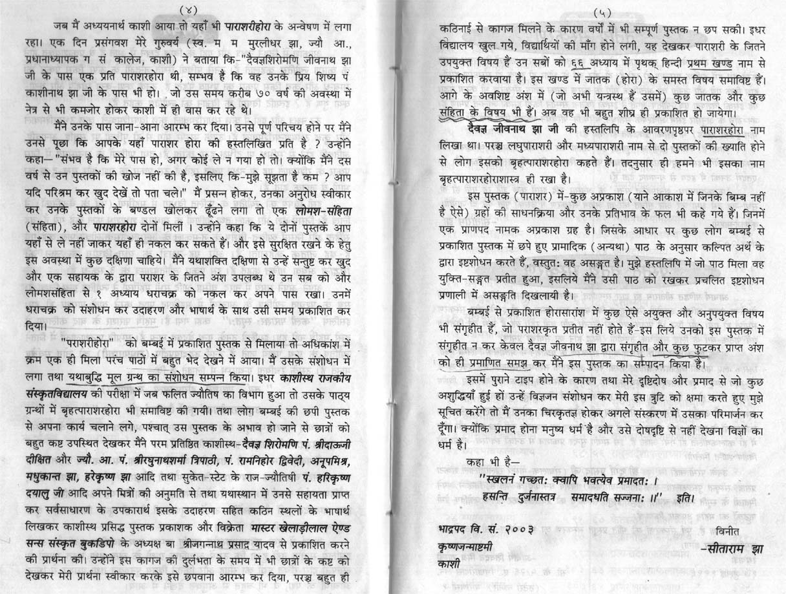
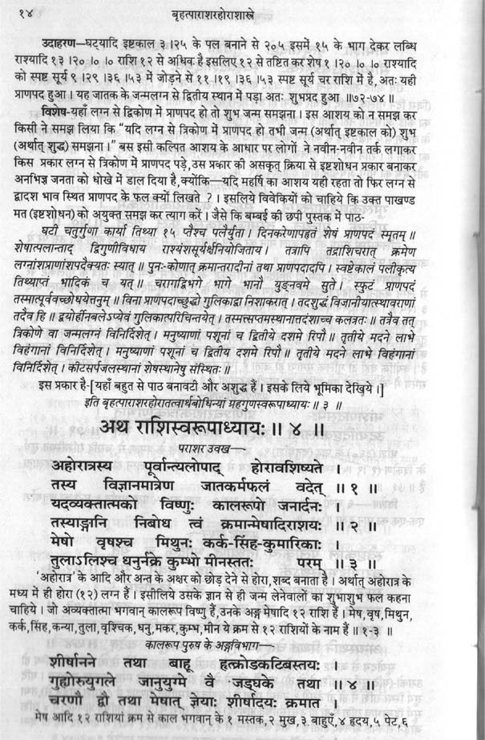
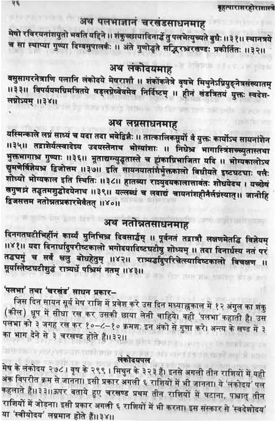
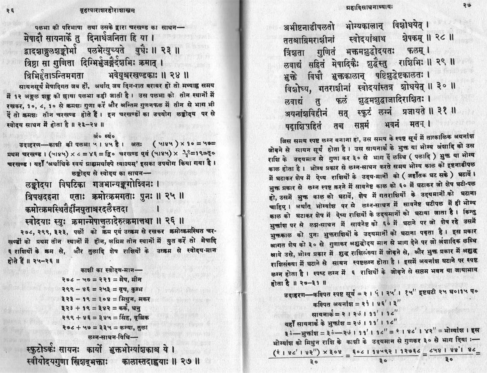
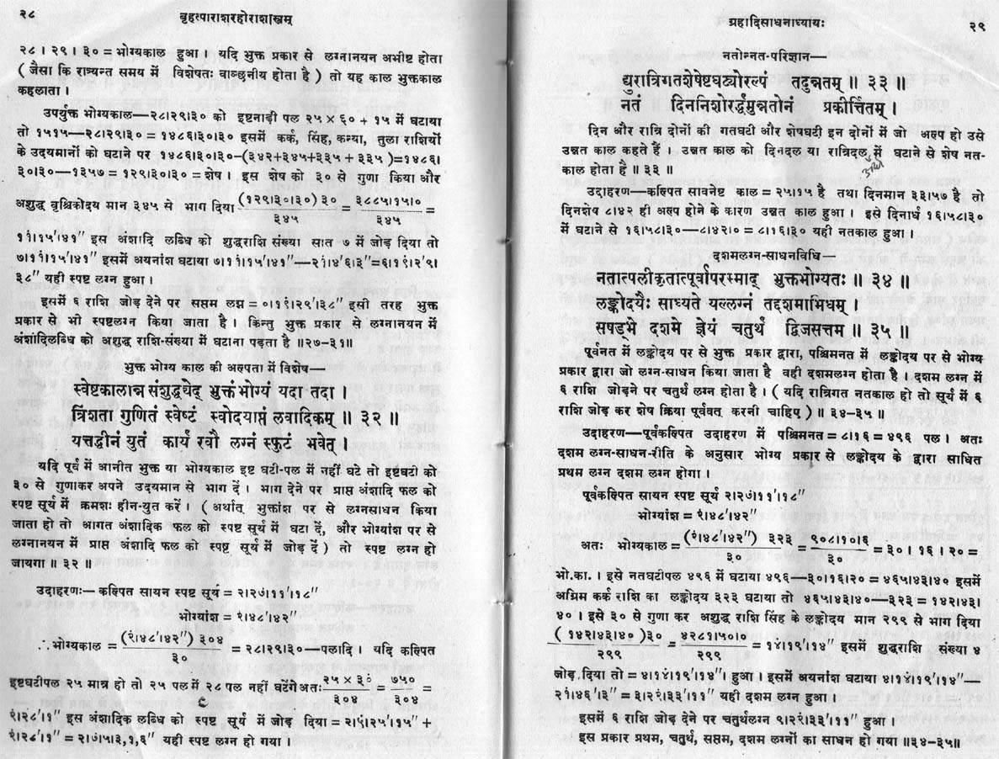
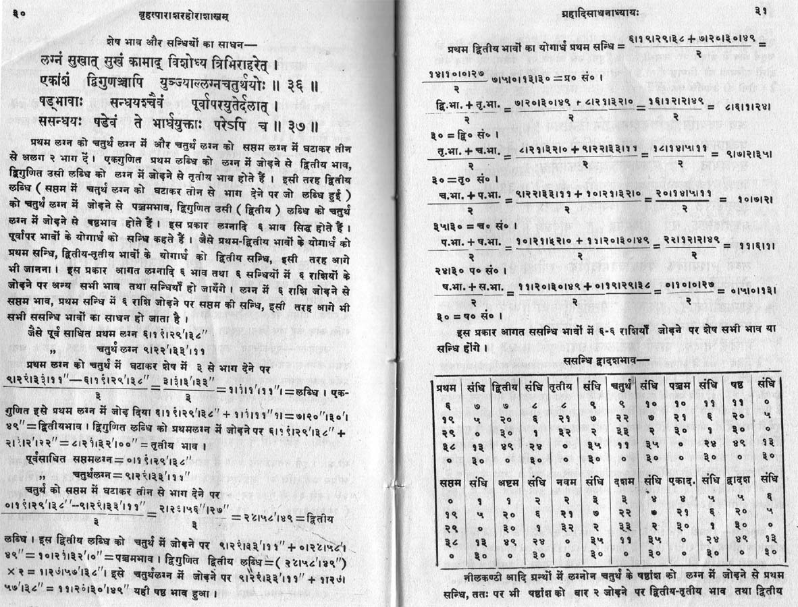
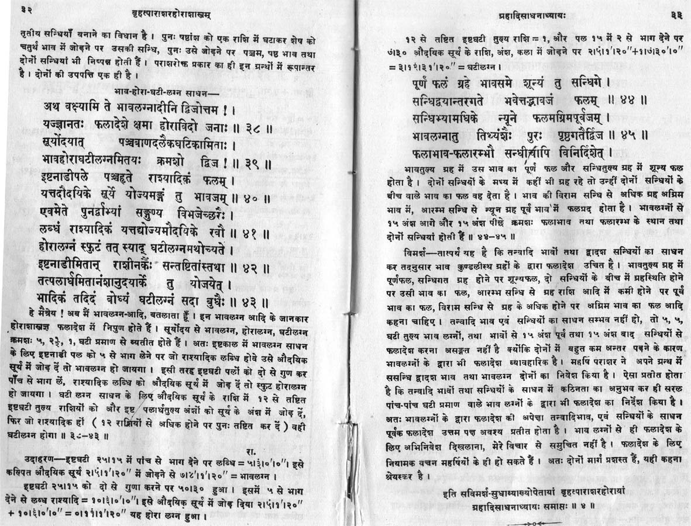
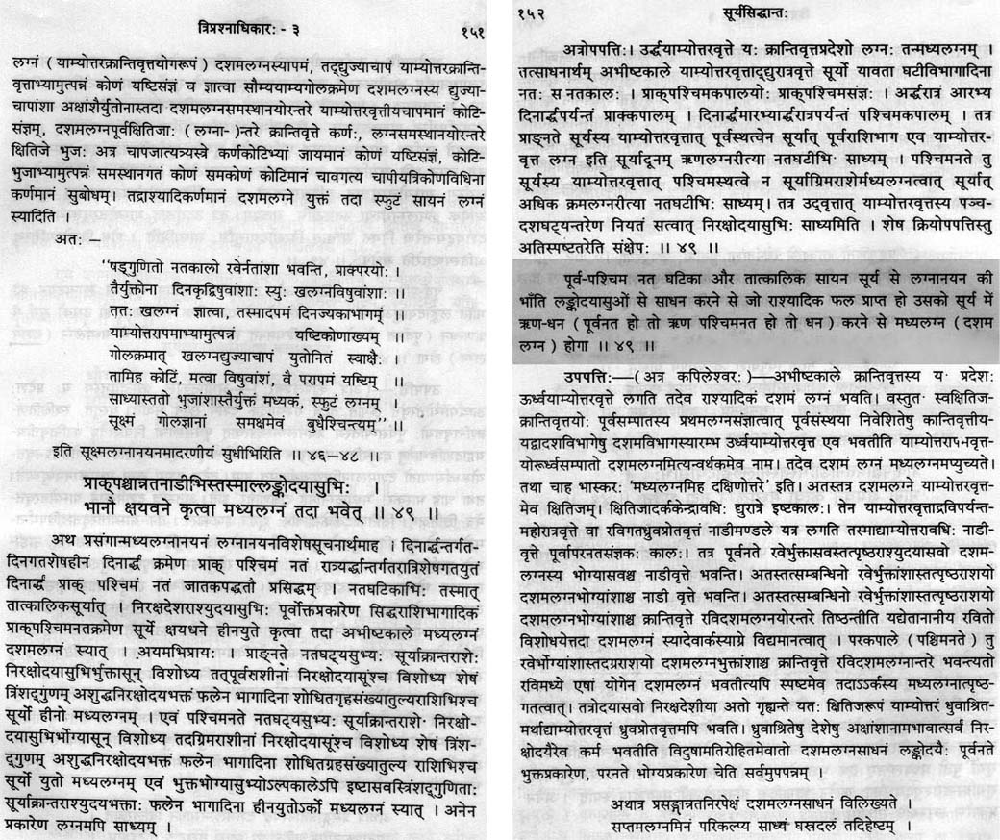

|
Table of Contents
|
समभाव बनाम विषमभाव
'समभाव' नाम की कोई चीज ज्योतिषशास्त्र में नहीं होती । प्राचीन सिद्धान्त ग्रन्थों, यथा सूर्यसिद्धान्त, में लग्न और दशमभावमध्य के सूत्र दिए हुए हैं जिनके अनुसार केवल विषुवत वृत्त पर ही दशम और लग्न का अन्तर 270 अंश होता है, अन्य अक्षांशों पर कुछ अन्तर रहता है । अतः ज्योतिषशास्त्र के सिद्धान्तस्कन्ध (गणित) में लग्न और दशम की गणितीय परिभाषा और सूत्र के अनुसार सिद्ध है कि विषमभाव ही सत्य है । किन्तु कलियुग में सिद्धान्तस्कन्ध पढ़ना ज्योतिषियों ने छोड़ दिया है, सबकी रूचि केवल फलित में है क्योंकि इससे फल झड़ता है ।
बृहत्-पराशरहोराशास्त्र में विषमभाव पर एक अध्याय ही है, किन्तु भावलग्न-होरालग्न-घटीलग्न में समभाव का प्रयोग है जिसपर देवचन्द्र झा की टीका में कहा गया है कि यह स्थूल विधि है, किन्तु यदि इसे सही भी माना जाय तब भी केवल भावलग्न-होरालग्न-घाटीलग्न में ही समभाव का प्रयोग करना चाहिए क्योंकि इस एक श्लोक के कारण विषमभाव पर पूरे अध्याय को नकारा नहीं जा सकता । किन्तु सीताराम झा ने बृहत्-पराशरहोराशास्त्र के अपने संस्करण में विषमभाव का पूरा अध्याय ही हटा दिया और भूमिका में निर्लज्जतापूर्वक मूल पाण्डुलिपि में "संशोधन" करने की डींग भी मारी, जो कि ऋषियज्ञ का अपमान है । आर. सन्तनम ने इसी गलत संस्करण को अंग्रेजी अनुवाद के योग्य समझा क्योंकि उन्हें भी समभाव पसन्द था, क्योंकि विषुवत के पास होने के कारण समभाव का दक्षिण भारत में प्रयोग होने से त्रुटि अल्प रहती है जिस कारण समभाव उत्तर भारत की अपेक्षा दक्षिण भारत में अधिक प्रचलित है । किन्तु जैसे-जैसे उत्तर जाएंगे, त्रुटि बढ़ती जायगी । अल्प समय में अधिकाधिक ग्राहकों की कुण्डली देखने के लोभ में बाजारू किस्म के समस्त ज्योतिषी समभाव का ही प्रयोग करते हैं । इंटरनेट पर बृहत्-पराशरहोराशास्त्र का केवल अंग्रेजी अनुवाद ही उपलब्ध है जिसकी पाण्डुलिपि ही भ्रष्ट कर दी गयी थी । देवचन्द्र झा , गणेशदत्त पाठक, खेमराज, आदि संस्करणों में विषमभाव का अध्याय अक्षुण्ण है । सिद्धान्तग्रन्थ ही गणितीय प्रश्नों के लिए मान्य हैं, किन्तु किसी भी भारतीय सिद्धान्त-ज्योतिष के ग्रन्थ में समभाव की चर्चा तक नहीं है, केवल विषमभाव का ही प्रयोग है ।
राशिचक्र को ही भावचक्र मानने वाले इतना भी नहीं सोचते कि लग्न को प्रथम भाव का मध्य माना जाता है (आधुनिक युग के पाश्चात्य ज्योतिष और उससे प्रभावित भारतीय ज्योतिष के एक आधुनिक संस्करण कृष्णमूर्ति-पद्धति में लग्न को भावारम्भ माना जाता है, किन्तु ऐसा करने पर भाव का आरम्भ पिछले भाव के मध्य में चला जाएगा), किन्तु लग्न हमेशा 15 अंश पर तो नहीं रहता, अतः राशि के मध्य में प्रायः लग्न नहीं रहता । यदि राशि के अन्तिम भाग में लग्न है तो भाव का अन्त अगली राशि के लगभग मध्य में चला जाएगा । अतः पूरी राशि को एक भाव मानना असम्भव है । भारतीय ज्योतिष की मान्यता के अनुसार गणितीय प्रश्नों का समाधान गणित-स्कन्ध (अर्थात सिद्धांत ग्रन्थ) के आधार पर करना चाहिए , न की मध्ययुगीन वा आधुनिक फलित ग्रंथों की आधार पर ।
Evidence of More Than One Sign in a Bhāva in BPHS
The following verse is present in all versions of BPHS, incl English version (which I do not approve because that version is not based on any manuscript and is based on tampered version prepared by Sitaram Jha) :—
राशि-द्वय-गते भावे तद्-राशि-अधिपतेः क्रिया ।
Santhanam gives following meaning of this line :—
"If a bhaba extends to two Rasis, the rectification will be done as per both the lords".
Replace the word "rectification" with "action" and Santhanam will be correct. "Rectification" may mislead some readers. The verse contains क्रिया = action.
It proves that all versions of BPHS approve of Bhaava not being same as Rasi.
The entire chapter on Bhaavachalita was removed from BPHS by Sitaram Jha, and this tampered version is the only source of English version due tp prejudice against bhaavachalita in the mind of Santhanam.
But other editions of BPHS (with Hindi commentaries) contain that chapter on Bhaavachalita, and that chapter calls for separate computation of Dasham resulting in UNEQUAL house division. Dozens of original Sanskrit manuscripts of BPHS are still preserved in govt libraries.
Three Types of House Divisions in Vedic Jyotisha
It is unanimously accepted by all Indian classics of Jyotisha that astrological fruits depend on Bhāvaphala plus Bhāveshaphala, they do not talk of Rashi-phala in this context. The latter is a Western concept popularized by media in recent decades. In traditional astrology, Rashi-phala is restricted to Moon's gochara fruits only. Both Bhāvaphala and Bhāveshaphala require correct dilineation of Bhāva Chart. But there are three alternative methods of casting Bhāva Chart in India. One is treating Rasi Chart as Bhāva Chart, the rasi of Lagna taken as first house, and completely ignoring the Bhāvachalita. This is the most popular method because it saves time and serves maximum number of clients in short time. But it has no classical backing, because rasi-middle is rarely Lagna or Dashama or any other house-mid. Generally, a bhāva extends into two rāshis : BPHS (Brihat Parashara Hora Shastra) mentions it at the end of chapter-29, which is chapter-28 in Santhanam's edition. Hence, this crude method should not be used.
Second method is actually an extension of the first method, but with addition of a Bhāvachalita which is treated as an insignificant tool used occassionally only for finding planets in Bhāva-sandhis. It treats each house to be of 30 degrees exactly, which is mentioned in a handful of Phalita texts, but no ancient Siddhanta-Ganita text of Jyotisha approves it, all of them support unequal house division. But astrologers read only Phalita texts and have no interest in Siddhanta-Jyotisha texts.
The third method is treating the Bhāvachalita as the D-1 or Lagna Chart (first divisional or Varga). Most ancient texts of India show that unequal house division was the mainstay. BPHS contains both the unequal house division (deleted only in the spurious version of BPHS tampered by Pt Sitaram Jha and followed by R Santhanam who did not care to consult manuscripts), and the equal house division, but the latter is mentioned only while dealing with special lagnas : Bhāva-lagna, Hora-lagna and Ghati-lagna. Planets do not own Bhāvas directly, they own Rāsis, and the majority rāsi inside a house crudely determines the bhāva-ownership. But it is a crude rule. Suppose some house contains 60% Leo occupying it, and 40% Cancer. Then, house middle will fall in Leo and Sun will predominate as lord of that house. But Moon will dominate the Cancer part of that house. Shatrugrihi, mitragrihi, svagrihi, etc are all determined by rasi-ownership. Bhaavachalita is not used for computing any other element. All elements are computed from Rasi Chart. Rasi Chart is the Basic chart. The only use of Bhaavachalita is Bhaavaphala (and Bhaaveshaphala).
Janmakundali or Horoscope is combination of all charts. Rāsi Chakra is not Janmakundali : it is a simplistic modern fashion. There is no bhāva in Rāsi Chart. All twelve bhāvas are in bhāva chart. Rāsi Chart is used for mathematical purposes only : for creating bhāva chart and other divisionals, computing aspects, friendships, exaltations, relations, etc, while bhāva chart is for bhāva phala and bhāvesha phala.
Kundalee Software has "CHAKRA" button for each chart, which shown circular bhāvachalita in colours on a black Rāsi Chart, with aspects on mouse click on each point. This circular chart makes it easy to understand the BHāva Chakra. Lord of bhāva-mid occupies the majority of that bhāva and is therefore called as lord of that bhāva, but lord of the minority sign in that bhāva also affects its sign in that bhāva, BPHS says both sign lords must be accounted for (rāshi dvayagate bhāve tad-rāshyadhipateH kriyā"). Bhāvachalita is more difficult than Rāsi Chart, that is why it is now not preferred. People like simple things. But such trends must be opposed. In medicine or engineering, you do not simplify the techniques to kill the science.
Functional nature of a planet is defined by lordship of bhāva mid because bhāva mid is part of the majority sign, and bhāva mid characterizes th bhāva too. For instance, Lagna is a POINT and not a RANGE, but first house is also called Lagna. The Lagn-Bindu will define Lagna-Lord. Similarly, all other bindus of bhāva-middles will define their lords. When you will use CHAKRA mode in Kundalee software which includes both Rāsi Chakra and Bhāva Chakra simultaneously, things will become simpler. Minority sign in a bhāva defines the friendships and relations of planets in it. Moreover, if Moon is 9L (lord of 9H), but Karka is a minority sign in 8H also, it will reduce the beneficence of Moon. But if Karka occupies entire 9H, then Moon will be more benefic.
JHora has bhāvachalita, but not along the method followed by Indian classics, and PVR Narasimha Rao does not explain what method he follows. Even in the Option named after my name, the bhāvachalita chart is wrong, but after much discussion, he agreed to put the correct bhāvachalita data in tabular form , from which one would have to create the chart manually ! If chart is made manually, what is the use of asoftwares ? Even greater disaster is the fact that this wrong bhāvachalita is being floated in my name. He refused to follow the bhāvachalita of BPHS and SSS, saying it is interpolation, although he included hundreds of wrong options which he himself does not like.
Theoretical Explanation
Earth's equatorial plane projected into space is called Nādi-vritta (celestial equatorial plane). It is divided into 12 equal parts which are called rāshis (signs).
But "Signs of the Zodiac" are not rāshis of the Nādi-vritts. Zodiac is not Nādi Vritta, it is the average path of planets, and that average path is Ecliptic (path of the Sun, Krānti-vritta in Siddhānta-Jyotisha of ancient India). Rāshis projected onto Ecliptic plane divide the Ecliptic Plane into 12 parts, but not into equal parts as done on Nādi vritta. It is because Ecliptic is tilted by 24 degrees in Suryasiddhanta (and by 23.46 degrees in Drik astronomy) on the Nādi-vritta. When a circle is seen obliquely, it appears to be elliptical, and its 12 equal parts appear to be unequal. This is the reason behind Unequal House Division. There are many types of Unequal House Division, Placidus being the most famous in the West during recent centuries, and Suryasiddhanta-BPHS house system is the only system known to all traditional astrologers and panchanga makers of India. Since average path of planets is the ecliptic with some latitudinal width of a few degrees plus and minus, astrological houses are divisions of this path in which planets actually move, and not the equatorial Rasi Chakra which is merely Earth's Equatorial Plane projected into space and is not related to planetary paths. Equal divisions of Nādi Vritta are called "Rāshis", and unequal divisions of Ecliptic plane are called Bhāvas or Houses. Any astrological result or phala comes from bhāvas and are called bhāva-phalas.
In mundane (Medini) astrology, rasis are fixed in space because Sky is deemed to be eternally fixed (it is Parabrahma, hence unmoving). Hence, with changing lagna due to diurnal rotation of Earth, it is the bhāva which ove. Hence, it is called Bhāva-chalita. Lagna is defined as rising point of the Ecliptic in ancient siddhāntic astronomy, although a handful of Phalita texts wrongly define Lagna as rising point of Rasi, but the very formula for computing Lagna proves that Lagna is a point on an ellipse and not on a circle, and therefore the houses must be unequal. Besides, it is universally accepted that all theoretical issues ought to be judged according to Siddhānta, of which Suryasiddhānta is the most detailed archaic siddhanta which Varahamihira accepted to be coming from Lord Savitā.
(I am avoiding discussion of lengthy mathematical equations which are actual evidences, because few astrologers are interested in mathematics).
The evidences of afore-mentioned statements are presented below.
BPHS Tampered by Sitaram Jha
The first printed edition of BPHS (Brihat Parashara Hora Shastra) was by Venkateshwar Press of Mumbai over a century ago, which was reprinted by Khemraj Press in 1961, containing 5781 verses.
In 1946, Pt Sitaram Jha procured a manuscript of "Parashari Hora" from Pt Jeevanāth Jha. His version was published in 1946, containing 4001 verses. He declared that the earlier edition from Mumbai was spurious. Here is the scanned copy of Pt Sitaram Jha's Introduction to his BPHS, containg his own admission of tampering with the manuscript : he boasted that he carried out a correction in the original text ("मूलग्रन्थ का संशोधन सम्पन्न किया") and deleted many portions found in the Mumbai edition ("बम्बई से प्रकाशित होरसारांश में कुछ ऐसे अयुक्त और अनुपयुक्त विषय भी संगृहीत हैं, जो पराशरकृत प्रतीत नहीं होते हैं — इस लिए उनको इस पुस्तक में संगृहीत न कर केवल दैवज्ञ जीवनाथ झा द्वारा संगृहीत और कुछ फुटकर प्राप्त अंश को ही प्रमाणिक समझ कर मैनें इस पुस्तक का सम्पादन किया है ।").
The most important deletion was the entire portion of BPHS describing the method of computing and casting Bhāvachalita Chart. Here is the scanned image of his text which shows end of that chapter with Prānapada, followed by next chapter on Rashi-swaroopādhyāya, although the next chapter in his version is Jnānādhyāya which contaiins only Bhāva-Lagna, Hora-Lagna and Ghati-Lagna, although in other versions, all these Lagnas are contained together in one chapter dealing with Guliga-lagna, Prānapada-Lagna, Bhāvachalita's Lagna and other houses, Bhāva-lagna, HL and GL.
BPHS Bhāvachalita in Khemraj Edition
Here is the scanned image of Mumbai edition containing initial portion of Bhāvachalita procedure, which was deleted by Pt Sitaram Jha in his edition :
Authenticity of Mumbai Edition's Bhāvachalita is reinforced by other editions of BPHS based on manuscripts, such as the following edition by Pt Devachandra Jha (Chowkhamba, Varanasi, 1973) :
BPHS Bhāvachalita in Chowkhamba (Devachandra Jha) Edition
Unequal Bhāvachalita in Earliest Siddhanta-Jyotisha Texts
The final solution to this problem lies in most ancient divine Siddhanta-Jyotisha texts, such as Suryasiddhanta (SSS), Brahma-siddhanta (in Narada Purana), Soma-siddhanta (published in 1912), which are all identical in equations and differ only in language. Suryasiddhanta was eulogised by Varahamihira to be the best siddhanta originating from the Vedic god Savitā. Suryasiddhanta's verse and Sanskrit plus Hindi commentary dealing with Dashama house is shown in the following scanned image :
In Suryasiddhanta, the equations for computing Lagna are described in detail (before the scanned image above, but the Sanskrit commentary clearly shows that mediaeval experts of Siddhanta-Jyotisha correctly Lagna as a point of elliptical ecliptic or Krānti-vritta, unlike some Phalita authors who had not studied Siddhanta like Varahamihira or Bhaskra). After that, Suryasiddhanta asks us to compute Madhya-lagna (i.e., Dashama or tenth House-middle) separately, which proves that Dashama is not exactly 270 degrees after Lagna and this is a concrete proof of unequal house division. Some fools have propagated on internet that unequal house division originated from Sripati, and have named it on his name. Equations of Lagna, Dashama, etc are part of Siddhanta skandha (branch) of Jyotisha, and not of Hora, while the mediaeval writer Sripati was an author of Hora and not of Siddhanta. It is noteworthy that the ancient siddhantic equations for computing Lagna and Dashama are exactly same as described in Mumbai and Devachandra editions of BPHS. Hence, Pt Sitaram Jha's assertion that Bhāvachalita portion of BPHS is fake and unwanted is foolish and false. He used equal house division for time-saving. Only an egotist fool like him can tamper with an ancient text from a rishi : Pt Sitaram Jha felt no shame in declaring that he "corrected" the original manuscript" of BPHS and added many new potions !!
R Santhanam translated BPHS into English. In his Introduction, he mentions that he possessed all above editions of BPHS (but never felt the need to consult any manuscript), but decided to follow Pt Sitaram Jha's text because of its "more credibility". Santhanam never disclosed the reasons behind this "credibility", but comparing all editions, I found that the most important difference is the deletion of Bhāvachalita chapter in Pt Sitaram Jha's (and Santhanam's) edition. South Indian astrologers generally prefer rasi chart as D-1 (first varga or divisional) and generally avoid Bhāvachalita, some of them vehemently oppose Bhāvachalita. North Indian astrologers use Rasi chart as D1 for time-saving but do not oppose the Bhāvachalita. But in recent decades, even North Indian astrologers are being misled by English-medium astrologers, bulk of whom come from South India. It is easy to understand why Bhāvachalita is rarely used in South India : South India is closer to the equator, and therefore ellipticity of unqual Bhāvachalita is small there and if rasi chart is used as D-1 then few charts will be wrong.
But as we move away from the equator, more and more charts will be wrong. In North India, sometimes we find charts having one house of 35 degrees and another house of 25 degrees. When one draws both rāshi-chart and bhāva-chart on each other, rashis are spaces at equal intervals of 30 degrees each, but some bhāvas are shorter and some are longer than 30 degrees. Sometimes, a rasi has some particular bhāva-madhya at its beginning and next bhāva-madhya just before the end of that rāshi due to shortening of that bhāva. Then, two successive bhāva-middles may fall in one rashi. Thus, Sun or Moon or the nodes may each become lords of two bhāvas. Planets like Mercury to Saturn may become lords of three of sometimes four houses ! But when bhāvas are larger, one rāshi may start after a bhāva-madhya and that rāshi may end up before the next bhāva-madhya. In such a case, the lord of that rāshi will lose lordship of any of those two bhāva-madhyas. Owner of a bhāva-madhya is regarded as owner of a house because it occupies majority of that house (but the lord of minority rāshi does not lose ownership of its rāshi : thus bhāvachalita is a very complicated system baffling most astrologers). Sun, Moon, Rahu and Ketu may be devoid of ownership of any bhāva. Then, they become bhāvaheena planets which function as most malefic planets. Similarly, a rāshi not occupying any bhāva-madhya loses becomes relatively phala-heena or nishphala and therefore bad during dashās depending on rāshis.
I have tested both methods during past decades, and came to the conclusion that D1 is bhāvachalita, while rasi chart is to be used for all mathematical operations which include construction of bhāvachalita, aspects, friendships, strengths, relations, exaltations or debilities, etc.
-VJ